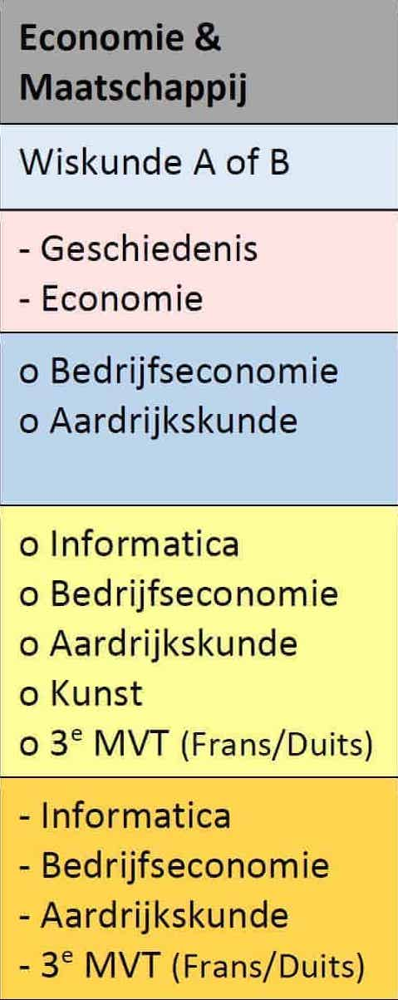
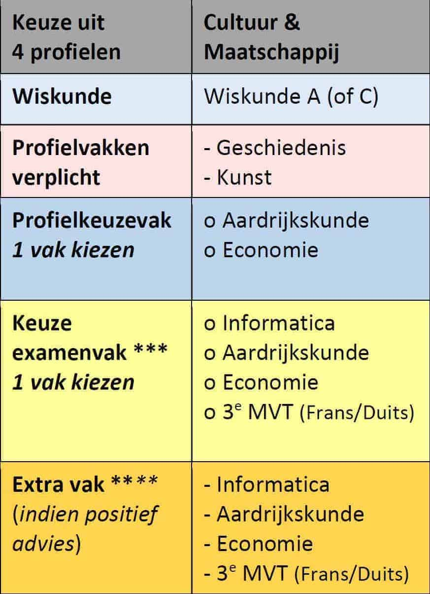

Economie en Maatschappij (E&M) is een keuzepakket dat je vanaf havo of vwo-4 kan kiezen. Het profiel bestaat sinds 1999, toen het voorgezet onderwijs in Nederland op de schop ging. Economie en Maatschappij behoort tot de zogeheten M-stroom, samen met cultuur en maatschappij. De m staat dan ook voor Maatschappij. Imago en doel: Economie en maatschappij heeft bij de meeste leerlingen een vrij "goed" imago, veel leerlingen denken er ook positief over. Dit komt mede doordat E&M door de meeste leerlingen wordt gekozen. Het doel van het profiel is een beroep in de economie, sociologie, recht, psychologie of informatica. Bij beroepen in de economie is economie een verplicht vak, maar aangezien je met een ander profiel ook dit vak kan kiezen, is het niet verplicht.
 Economie en Maatschappij is net als Cultuur en Maatschappij een breed profiel. Waar over het algemeen bij C&M meer nadruk ligt op cultuur en talen is hier meer aandacht voor economische vakken. In dit profiel volg je verplicht de vakken economie en geschiedenis. En er moet een keuze gemaakt worden tussen Wiskunde A en Wiskunde B. Ook kies je één profielkeuzevak dat bestaat uit Duits, Frans, Aardrijkskunde en Bedrijfseconomie. Hierna heeft de leerling nog een vrije keuze om zo het profiel volledig te maken. Scholen kunnen hier een eigen invulling aangeven. Vaak wordt met dit profiel gekozen voor een kunstvak, een taal, een tweede keuzevak bij dit profiel of biologie. En natuurlijk de algemene vakken.
Cultuur & Maatschappij(C&M) is een van de 'profielen' (vakkenpakketten) in de tweede fase van het voortgezet onderwijs (havo en vwo) in Nederland, sinds de invoering van het tweede-fase-systeem in 1999. Cultuur en Maatschappij is het minst exacte profiel. De andere profielen zijn Economie & Maatschappij, Natuur & Gezondheid en Natuur & Techniek. Doel: Het doel is om voor te sorteren voor het vervolg van de persoonlijke carrière en belangstelling. Veel studierichtingen nemen om commerciële redenen leerlingen aan van alle richtingen. Enkele studierichtingen eisen echter een bepaald profiel.
 Het profiel Ciltuur en Maatschappij is heel brede profiel. Het profiel Cultuur en Maatschappij is gericht op talen, culturen, communicatie, muziek, kunst en maatschappelijke onderwerpen als rechten, politiek, onderwijs, filosofie, geschiedenis of hulpverlening. In dit profiel volg je verplicht geschiedenis en Frans of Duits. En er moet een keuze gemaakt worden tussen Wiskunde A, Wiskunde B en Wiskunde C. Ook kies je één profielkeuzevak dat bestaat uit Economie, Frans, Duits, Maatschappijwetenschappen, Economie, Beeldende Vorming, Muziek en Drama(ligt aan jouw school). Hierna heeft de leerling nog een vrije keuze om zo het profiel volledig te maken. Scholen kunnen hier een eigen invulling aangeven. Vaak wordt met dit profiel gekozen voor een kunstvak, een taal, een tweede keuzevak bij dit profiel of biologie. En natuurlijk de algemene vakken.